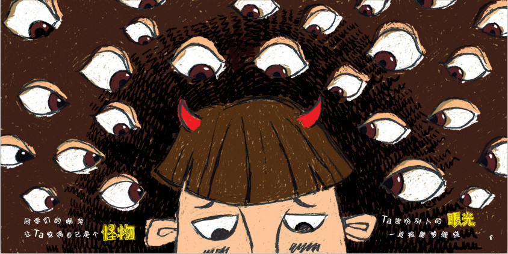
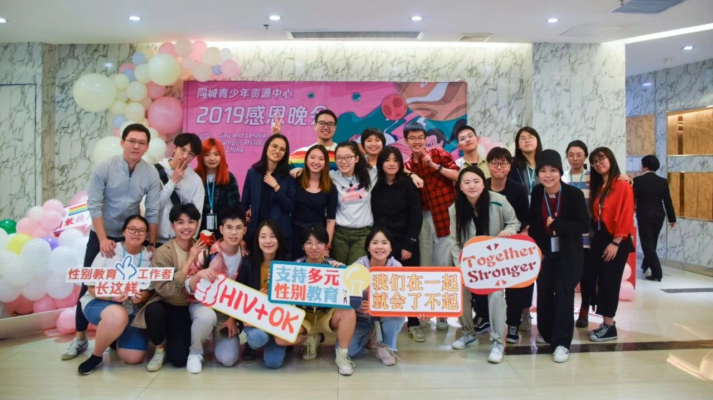
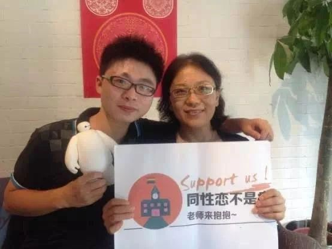
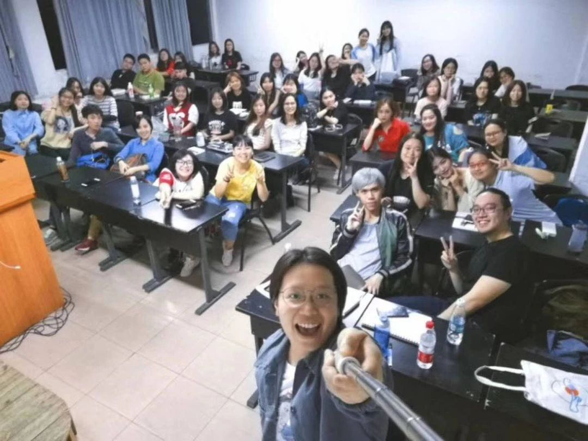
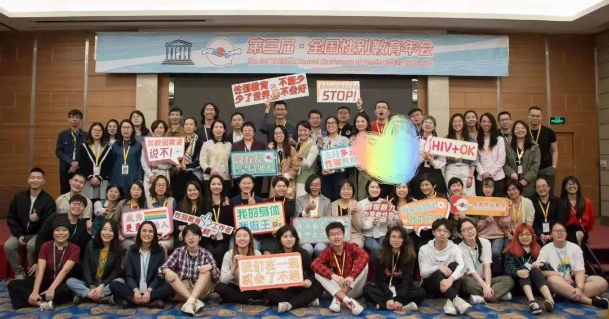

如果，你曾因被欺凌、歧视而感到无助，想创造改变，却不知如何下手。如果，你想创造性别和同志友善的校园和生活环境，又想好玩、易上手。如果，你相信“故事”是能带来力量和希望，能打破偏见，创造对话和理解，能帮助他人看到“真实而具体的人”。如果，你相信行动，可以打破无力感，并成为别人的一道光。
或者，你希望了解更多性别、同志的知识和听听更多故事。或者，你正在尝试发声、做出努力，却总感觉有些孤单，缺少志同道合的伙伴。在这里，我们将助力渴望创造改变的你，让偏见不再阻挡爱与友善。同城青少年资源中心（GLCAC），作为中国唯一一家长期关注LGBT青少年处境、推动校园性别平等教育、应对校园性别欺凌的民间团体，过去13年的经验告诉我们，每个人的故事都有着无穷的力量。故事的力量，在于让身边的青年同伴更有力，提升自我认同。也在于，以故事创造共情和对话，打破刻板印象，消除误解，看见真实的同志群体和与性别有关的喜怒哀乐。
因此，我们推出“HUG拥抱”计划。这是一个以讲故事为基础青年与教育领导力项目。项目将为渴望改变偏见、但苦于不知道如何下手的年轻人提供一条清晰的成长路径，激发ta们的潜力。通过五个阶段的行动与反思、同伴支持网络，参与者以简单的演讲为起点，逐渐成长为能够以富有行动力、善于组织和策划、善于公众演讲、以创意建立对话，并将友善传递给更多人的青年领导者，以真诚的对话改善校园内的欺凌和歧视。只要有一颗想对话的心，每一日的生活、每一次与人的互动，都是改变发生的地方。
我们希望以此关心下一代，应对校园欺凌，促进社会和谐！O 阶段A（3月-4月）:
性别主题线上学习与交流
O 阶段B（5月-6月）：
首轮性别教育演讲实践
O 阶段C（7月-8月）：
性别教育青年进阶营（线下）
O 阶段D（8月-12月）：
友善教师游说及课堂演讲
O 阶段E（2021年1月份）：
全国性别教育年会
*阶段B线下内容届时将根据疫情发展情况进行调整，可根据情况转为线上分享或延期进行，请不用担心因为疫情无法完成阶段任务。
O 对象：完成报名并入选的义工（参与者）。
O 人数：100人左右
O 形式：线上微课平台、微信群。
内容：
1、性别通识课堂：
通过每周一次、连续六周的线上学习，参与者将学习到基础性别与同志友善的知识和演讲技巧。所有课程都将由资深讲者授课，完成后将进行简单的线上测试。
2、线上交流：学员性别生命故事夜话
这是一个学员间互助活动，所有的分享者都将从100位学员中通过定向邀请、自愿报名而来。我们相信，故事就是力量，故事也是希望。人人都有自己的经验，也在表达和聆听中被看见，从而创建对话。6周内，我们将安排4次线上生命故事分享会。每次4人，每人10分钟及提问交流。分享内容将涉及到自我发现、情感关系、校园生活及欺凌、家庭关系与出柜、跨性别等。这既是交流，也是演讲实战演练和点评。
这一阶段，筛选出50名积极的参与者进入阶段B。
*筛选制度是为了确保参与者阶段A的任务可以高质量完成，50人只是预计数字，对进入阶段B的人数没有硬性规定。请不要担心在即使比较好地完成阶段A任务的情况下依然被淘汰，无法退回押金的情况，我们尽可能地帮助参与者和我们一起进入下一阶段。
O 参与要求：完成阶段A的全部课程打卡，并通过结课测试。
O 入选人数：50人
O 地点：参与者所在城市
O 形式：参与者2人一组或单独行动
内容：
基于A阶段所学，开展3场（共计不少于45人）的生命故事分享活动。其中包括：
1、2场活动（讲座、聚餐、观影、出游等任意形式），每场活动邀请身边不少于15位LGBT或者关心性别议题的朋友，并在活动中分享自己的生命故事，以这样的方式进行同伴支持，帮助自我认同。分享内容将涉及到自我发现、情感关系、校园经历及欺凌、家庭关系与出柜、跨性别等，让大家看到榜样力量、希望和可能性，以及身体力行打破偏见的必要性。
2、1场通过课堂、公共空间等渠道面向陌生公众来分享生命故事的分享，不少于15位观众。参与者自行策划联络，我们也可将协助链接教师资源来协助你开展线上或线下的故事分享，促进可见和对话 。任何空间、任何场合，青少年的处境能因为我们做出的努力而改善！
每场活动，义工都需要在分享完成后按照规定提交记录活动过程和感想。项目负责人会1对1提供跟进和指导，答疑解惑，链接资源。*我们鼓励参与者在阶段B主要以线下的方式开展故事分享，但具体操作将根据疫情发展和参与者的实际情况酌情调整；如疫情严重，我们也将考虑将任务延期或者转为线上，请不用担心因为疫情无法完成这一阶段的任务。O 参与要求：按照要求完成阶段B任务，即可入选C阶段。
O 入选人数：30人
O 地点：中部地区（提供住宿、餐饮及全部当地会务费用）
内容：
参与者将与来自全国各地的其他入选义工一起，参与3天2夜的线下进阶课程。大家将一起复盘，相互分享经验、个人成长、思考与挑战，并进行团建活动；同时，义工们也将就公众演讲与对话技巧、性别议题进阶理论、校园性别和同志困扰的支持、活动组织与策划、筹款、义工领导力进一步学习。
值得一提的是，与线下青年进阶营同时举办的，还有同城性别教育师资研习营。阶段C参与者将有专门的机会与性别友善教师交流，旁听部分师资课程，了解课堂性别教育与欺凌应对如何教，并探讨共同努力的可能性。 在这里，参与者将获得个人成长和思考，感受社群的陪伴和力量。
参与者须在阶段B的活动中，通过演讲、举办活动等方式自筹完成部分小额交通费，超出的部分将由主办方承担。我们相信，筹款和演讲即是创造改变的公益现场，让更多人了解你所做的努力，并支持你朝着所相信的理念走下去；这本身既是创造改变和思考的过程，也是获取更多支持者和义工加入的过程，更是领导力积累的过程。
O 参与人数：20人
O 参与要求：全程参与阶段C青年营
O 地点：线上、参与者所在城市
1、同志和性别友善教师游说
8-9月，在当地组建义工小组。同时了解并游说身边的友善教师，通过与教师科普性别知识、分享自我生命故事来建立积极对话。目的让教师们意识到性别无处不在，身边也广泛存在着同志学生，知道遇到性别问题可如歌给学生提供力所能及的帮助。ta们的言行能给更多无助、自我认同不好的小伙伴以希望。
2、生命故事课堂分享
9-12月份，参与者须与当地教师、公共空间合作，或者线上举办生命故事分享会。这一次需要运用进阶营的知识，以创意方式开展故事分享。项目负责人将会视情况与大家进行针对性指导，了解大家的想法及解决实践中遇到的个性化问题。
在这个阶段期间，我们还将定向邀请部分出色的本项目义工，前往广州、上海、北京等地参与机构内部的年度义工领导力ngo访学交流（约10-11月）。
O 参与人数：10人
O 参与要求：按要求完成阶段D任务
O 地点：待定，中部城市（提供住宿和交通的报销）
内容：
参与者将参加为期三天的、由同城与联合国教科文组织驻华代表处联合举办的“全国性别教育年会”，与其它来自全国各地的同城义工、合作伙伴、性别友善教师等交流。大会中，所有参会者将一起反思过去一年行动取得的成效及个人成长，并从青年视角和行动经验出发就“师生合作”“教育对话”和“青年领导力”等主体发言，共同参与项目第二年的计划策划和梳理。
参与者将有机会在同城年度感恩晚宴作为青年代表做年度演讲，并被授予“性别友善校园青年大使”的表彰。O 以行动获得力量，不因旁观而无力。
O 开阔的视野，对教育如何推动社会改变系统思考。
O 收获一群志同道合、有趣的灵魂。
O 提升超强的演说、沟通、规划、领导协作、筹款等综合能力。
O 成为你所在地区的青年榜样，成为一道光！
O 18岁以上，学生和在职皆可，自我认同较好。
O 愿意面向公众、学生、教师等群体进行公共演讲和1对1交流，讲述自己性别故事。
O 能投入精力参与各个阶段的内容（2020年2月至2021年1月），包括线上和线下的活动。
O 积极主动，有较强的独立思考能力和反思能力。
O ⾏动能⼒强、有责任心，愿意不断学习、积极寻求自我突破，不轻易放弃。
O 作为GLCAC青年和教育项目，入选该计划的成员将等同于成为同城（GLCAC）在各所在城市的青年项目义工。需要遵守同城在后续培训的义工纪律和权利，服从机构和项目的安排。
O HUG计划基于“行动-学习-反思”的成长模型，看重参与者的实践能力，因此项目将采用淘汰制；每个阶段结束后，我们将会根据每个参与者的完成情况进行评估，选出部分参与者进入下一阶段，最后预计只有10位参与者将进入阶段E，获得“性别友善校园青年大使”的表彰。每一阶段的具体淘汰人数、项目内容和时间安排，可能基于实际情况、参与者的需要、疫情发展作出相应调整。
1、在线填写报名申请表：扫描下文二维码，建议使用电脑填写。
2、免费报名，项目参与需支付押金200元：申请表提交成功后，添加微信小编号GLCAC-02，发红包200元，备注“名字（与报名表一致）+ 青年项目”，方视为报名成功。（说明：为了不浪费项目资源、为自己的选择和行为负责的态度。我们设置了“押金模式”。顺利完成阶段A与阶段B的任务后，费用全额返还。否则，将不会返还费用。）
3、2020年3月15日星期天24时截止报名。3月20日前，项目负责人将通过微信小编号通知报名结果和后续安排。如报名未通过，押金5个工作日内退还。
4、如有疑问，欢迎咨询微信zhanglengyi，邮箱lz2474@columbia.edu
报名二维码
豆豆：同城青少年资源中心创办人，发展主任。香港中文大学访问学者，美国国务院ILVP访问学者、银杏基金会银杏伙伴。国内最早校园同志青少年议题倡导推动者，13年校园领导力、同志青少年服务咨询、政策倡导经验。先后推动高校性别通识课、教师撑同志、秋白诉教育部“中国LGBT教育权第一案”等众多代表性事件。
阿强：同性恋亲友会创办人及执行主任。哈佛大学肯尼迪学院、香港中文大学访问学者，银杏基金会银杏伙伴，入选险峰公益行动CEO，多家知名媒体专栏撰稿人。中国最早面向媒体公众出柜的社群工作者，近20年媒体、社群经验。
燕子：英国诺丁汉大学公共政策硕士，同志平等权益促进会发起人，中国同性恋扭转治疗第一案当事人，曾推动多起LGBT领域影响性诉讼。善于媒体传播和公共议题。
王笑哲：伦敦政治经济学院政治与哲学学士，剑桥大学性别研究硕士。2019年《性别理论的中国实践》线上课程主理人，益桥中国第三届伙伴，目前在公益机构兼职进行性别研究工作。
冯媛：为平妇女权益机构共同发起人，汕头大学文学院妇女中心创始负责人。中国妇女研究会理事。曾任反对家庭暴力网络/帆葆董事会主席，哈佛大学尼曼学者，瑞典隆德大学访问学者。作为中国最早的性别平等推定和研究者之一，其多年为教师、政府等各界提供性别培训，长期撰写性别时事评论，具有丰富的社会性别理论和性别现象分析能力。
黄豪杰：武汉同行同志中心创办人、执行主任。自2009年学生时代起参与性别议题社群工作，在武汉地区校园性别友善、同志青少年心理健康等议题上具有丰富的经验，持续深耕一线社群。2020年1月新冠肺炎期间与团队伙伴支持武汉地区感染者药物领取。
小布：温州性别教育小组召集人，高中语文教师，专注语文课如何融入性别的课程实践长达3年，擅长运用班会课、积极班级文化的构建来推动性别教育。长期在一线中学为不同性别群体的学生提供心理支持。
第一次真正意义上以一个故事的形式去展现自己自我认同中的纠结 无助、甜蜜以及乌龙。少年时期非常想要看到一个真正的同志，即使TA什么也不说，TA存在在那里对我来说也是莫大的支持，所以现在希望自己能成为那样一个人，去发声、去被看见。
—— 2厘米
第一次邀请异性恋的朋友参加活动，其实内心也有点紧张，因为在此之前她都没有接触过同志的活动或者是圈子，怕她会在里面觉得不适应或者是吓到她了，但是很开心的是她在这次活动中看到了同志的另一面，更加了解这个圈子。后来我在微信上问她参加完这次活动有什么感受，她给我发了好长一段话，我当时看完眼泪都快要流出来了。这可能是我第一次真真切切感受到了我们的活动、我们所做的努力带来的一点改变，我们不是在做无用功。每一次活动不是一群人嘻嘻哈哈聊天过去了，而是在这一次次的讨论对话中，能在我们心里留下什么，我们有了什么新的感受。
—— 西瓜
从第一次酝酿了几个星期、流着眼泪向最好的朋友出柜，到今天和陌生人认识了十分钟就可以“开始我的表演”，我几乎没有意识到，讲述自己的生命故事已经从情感宣泄的需要变成了创造改变的一部分。在我出柜之前，很多朋友从来没有见过“活的”同志。得知我曾经历过的迷茫和痛苦，他们会露出很惊讶的神情，也很难把故事中的那个女孩和他们面前的人画上等号。讲述自己的生命故事，则是一个创造共情的契机，带聆听者回到记忆深处最痛苦的地方，并实实在在地影响到身边的人。
—— L
同城青少年资源中心（GLCAC），昵称“同城”。于2006年出生，是国内较早关注校园性别友善环境，性别欺凌和青少年性少数，培训并支持教师，社工开展性别教育的团体。
我们现在已13岁啦！办公室在广州，目前在武汉、广州、佛山、杭州、成都、盈江、哈尔滨、温州等38多个城市与师生一起开展工作。我们一向低调，可能你还不认识我们，但可能知道我们所做的事：
“2007-2018年，超过600场多青少年性别故事分享”
“2009-2015年，场场满座的高校多元性／别公选课”
“2012-2018年，共派发8万本性别友善漫画手册”
“2014年起，长期关注教科书污名性少数问题”
“2014-2018，共培训320位性别友善教师”
“2018-2019年，连续举办2次全国性别教育师资年会”
……
想了解我们更多欢迎长按识别下方二维码
关注同城微信公众号（GLCAC-03）
▼▼▼▼▼